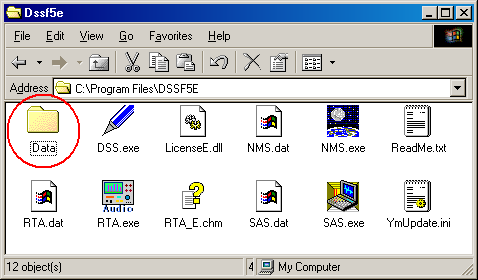
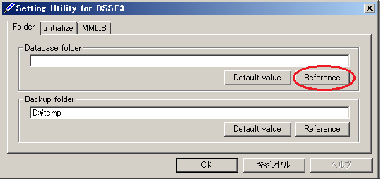
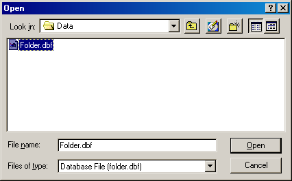
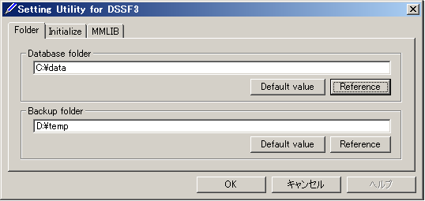

DSSF3 > RA > Impulse response > Measurement guide
Measurement data backup
Measurement data of Realtime Analyzer, Sound Analyzer, and Environmental noise Analyzer, and the related data such as the microphone calibration data, the inverse filter, and the noise source template, are stored in the common database. Below, it is explained how to manage the measurement data and delete the stored data.
All of the measured data and the microphone calibration data are stored in the DATA folder in the program folder (e.g. DSSF5E). The database of DSSF3 is 64-bit, and the maximum data size of 2000 GB can be stored. The database of RAE, RAD, and MMLIB is still 32-bit at the time of default installation, but once you install the DSSF3, these software can also use the 64-bit database.

On-line update of the program never erase the data you have stored in the DATA folder. However, when you "re-install" the program, all the data is erased, because the sample data overwrites the existing data. To protect the already stored data, you have to backup the existing data before reinstallation. How to backup data is as below.
- Rename the DATA folder (for example as DATA1).
- Install the program.
- Delete the automatically created DATA folder and rename the folder DATA1 to DATA.
This backup operation enables you to use the existing data after reinstallation.
Setting Utility to specify the data folder
In the RA series (RAD and RAE), measurement data is always stored in the "DATA" folder. To backup the data, this DATA folder has to be moved to the other location or renamed every time. But in DSSF3, this problem has been solved. If you are using the DSSF3 version 5, you can specify the data folder by using the setting utility (DSS.exe). Wherever the measurement data is saved (even in the other computer on the network), DSSF3 can use this data. By this function, management of the measurement data becomes much easier.
- Run the DSS.exe and click the Reference button.

- Specify the measurement data folder, then the file FOLDER.DBF is displayed. Select this file and click the Open button.

- Click the OK button. Now the data in the specified folder is used by the DSSF3.

DSSF3 > RA > Impulse response > Measurement guide